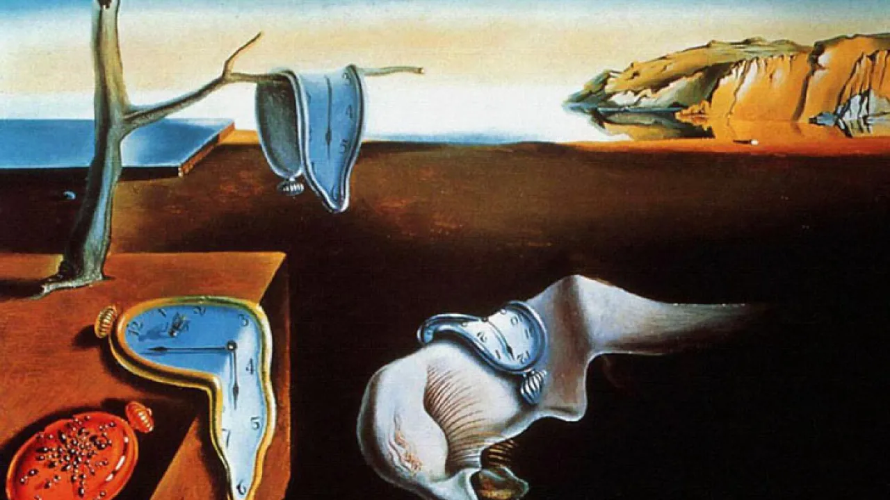

Expressionismo

O expressionismo é um movimento artístico de vanguarda ocorrido no início do século XX, no contexto que envolveu a Primeira Guerra Mundial. Em franca oposição ao impressionismo, esse movimento é caracterizado pela irracionalidade e pelo individualismo, além de apresentar uma visão pessimista da realidade, de forma a realizar uma deturpação do real.
Cubismo
O Cubismo trata-se de um movimento artístico revolucionário, cuja principal característica é a observação da realidade sobre diferentes perspectivas, envolvendo a geometrização das formas e a ruptura com a representação verossímil dos objetos.
Futurismo
.avif)
O futurismo iniciou-se como movimento na Itália, em 1909-1910, com forte tonalidade patriótica em seu manifesto, mas teve influência nas artes de outros países, como França, Rússia e Brasil. Esses artistas viam o futuro representado na velocidade do automóvel, nos avanços industriais, na eletricidade, nas grandes metrópoles, nas engrenagens dos maquinários, enfim, na nova configuração social do início do século, que para eles representava um novo mundo e um novo homem.
Dadaísmo

O Dadaísmo, ou Dada (cavalinho de pau, em francês), foi um movimento e fenômeno cultural que ocorreu de 1916 a 1922 em alguns países da Europa e nos Estados Unidos (EUA). Diferente de outros estilos artísticos que contemplavam a arte e a estética pictórica, o Dadaísmo questionava qual era o objetivo da arte e o seu valor cultural.
Surrealismo
O Surrealismo apesar de influenciar outras áreas artísticas, ele está predominantemente vinculado às artes visuais. Assim, a pintura surrealista constrói imagens que lembram ilógicos sonhos, de forma a investigar o inconsciente humano."
Fauvismo
O termo tem origem na expressão francesa “les fauves” (as feras), como eram chamados pintores como Henri Matisse, que expuseram seus trabalhos em Paris entre 1905 e 1907. Suas pinturas apresentavam simplicidade, primitivismo, além de cores puras, fortes e brilhantes.